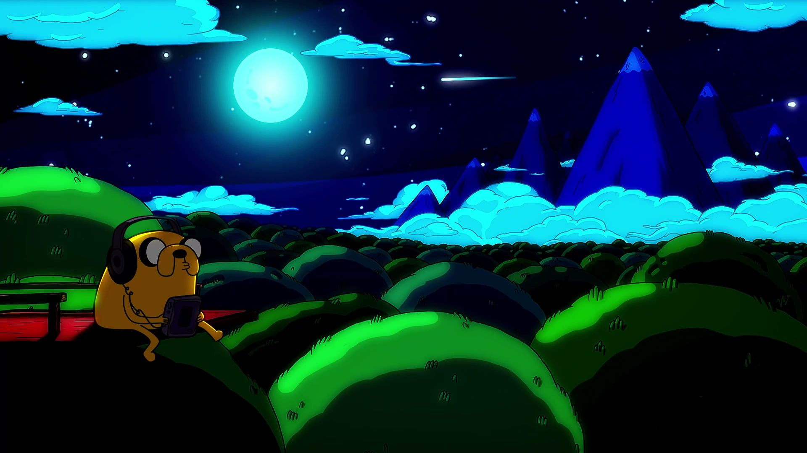
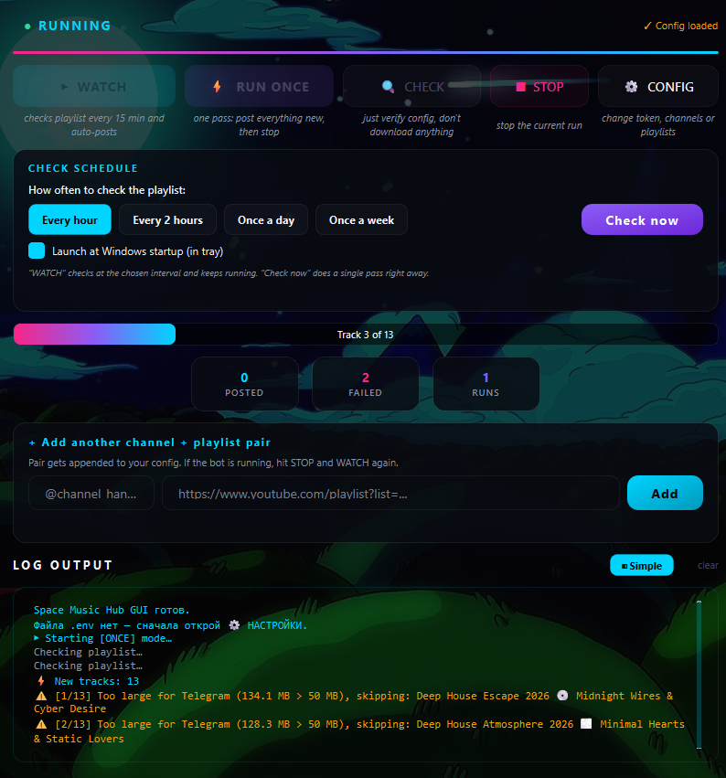

A Telegram bot and a standalone Windows app that watches YouTube playlists, downloads every new track as a 192 kbps MP3, and posts it straight to your channel — automatically.
Pipeline
A simple, reliable pipeline. Runs on a schedule, never posts the same track twice, and resumes exactly where it left off after any interruption.
Features
Not a throwaway script — engineered with the practices employers look for.
Setup
Double-click the .exe: a first-run wizard sets you up, then this dashboard takes over — Watch, Run once or Check, with a live log. No Python, no .env editing.

Editions
The project's evolution — from a CLI script to a packaged desktop product — lives in one repository.
By the numbers
Tech Stack
Every dependency earns its place.
Get started
Two ways in — pick the one that fits you. Works for developers and non-technical users alike.